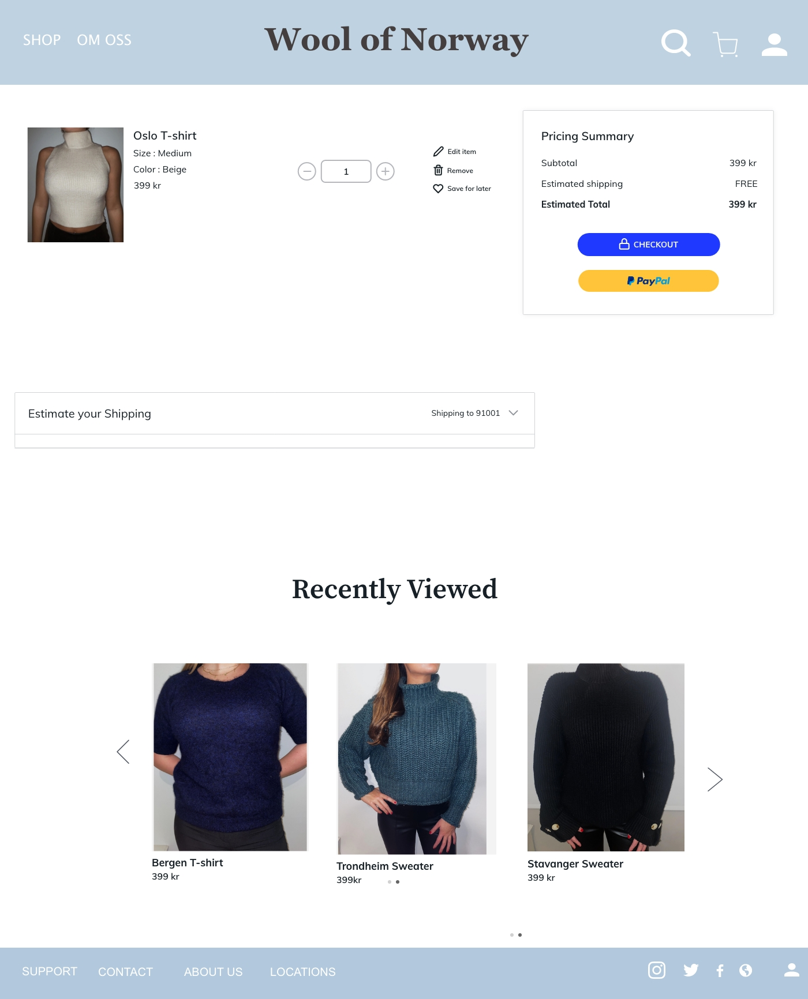
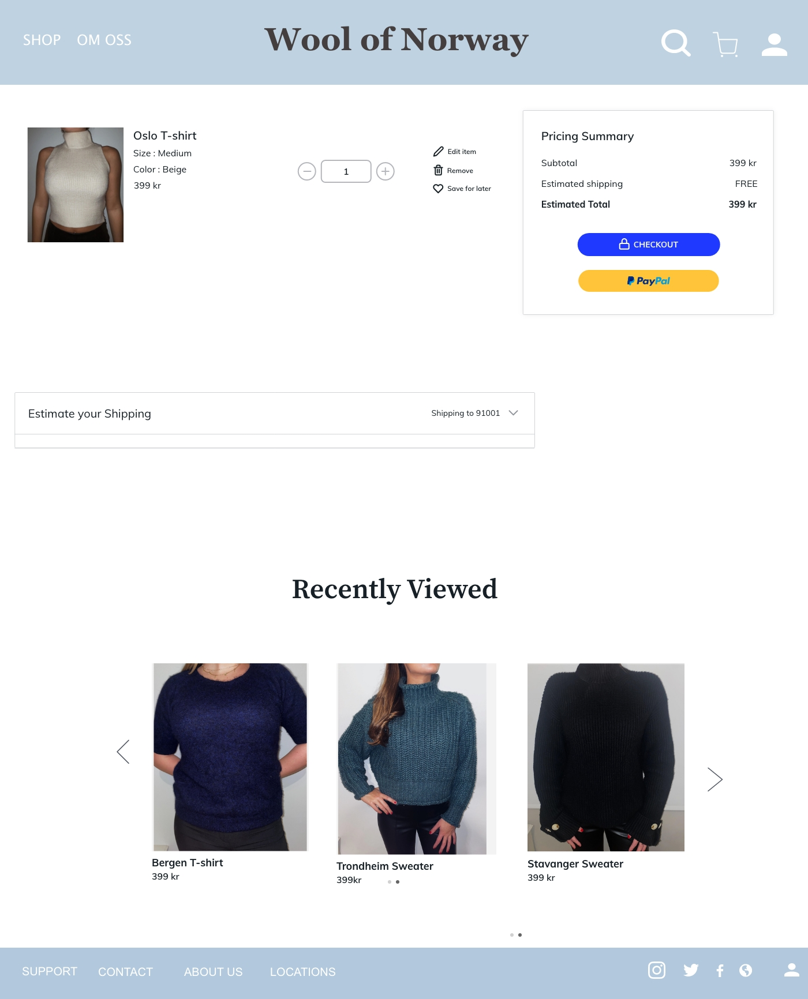

TEMA 3
Grunnlegende UX
Prototype
Tema 3 sitt hovedfokus var å lære oss om, og skape forståelse omkring samspillet mellom bruker og produktutvikling. Dette gjorde vi ved bruk av ulike teorier, verktøy og metoder som hjelper oss med å finne ut hva den faktiske brukeren ønsker og syntes er viktig både når det gjelder UI elementer og design. Temaet innenfor grunnleggende UX gikk ut på å lage en prototype til en nettside og stadig gjennomføre tester og undersøkelser for å bedre brukeropplevelsen på siden. I prosjektet sin startfase intervjuet jeg flere personer om deres handlevaner på nett, og fant ut hva de liker og ikke liker med netthandel. Dette ga meg et innblikk i hva det var ekstra viktig å ta med meg videre til ide og utviklingsfasen. Prosjektet gikk ut på å lage en nettbutikk med fokus på salg av T-shirts.
Jeg ønsket å lage t-shirts laget av ull, for å finne ut om dette var noe folk ønsket lagde jeg en survey. Jeg syntes en digital survey er den mest effektive måten å samle inn mye og spesifikk informasjon på. Resultatene fra undersøkelsen var positive, og jeg gikk dermed videre med moodboard og designfasen. Den mest avgjørende fasen for mitt prosjekt var testfasen. Ved å la de i målgruppen navigere seg fram på siden og se de ulike løsningene ga meg mye innsikt i hva som fungerte og ikke. Dette temaet var veldig hjelpsomt da det ga en ny forståelse om hvor viktig brukerne og deres meninger er for det ferdige resultatet og kvaliteten.
 

«Vi i Wool of Norway ønsker å lagebærekraftige og moteriktige klær for kvinner.Mote og komfort skal gå hånd i hånd, selv i et kjøligere nordisk klima.»
Pitch
En viktig del av produktutvikling er å overbevise og selge produktet sitt til brukeren. Dette kan man gjøre blant annet gjennom en pitch. Målet er å overbevise om at det du har er et bra produkt som kommer til å selge. I min pitch la jeg lik vekt på å selge inn ideen og produktet som jeg gjorde på testene og tilbakemeldingene. Dette valgte jeg fordi jeg syntes produktet og dens egenskaper selger seg selv.
Etter å ha fortalt om hvordan jeg kom fram til den endelige prototypen vise jeg rundt på siden, og hvordan det er å bruke den. Jeg syntes denne øvelsen var veldig lærerike da den gir et godt innblikk i hvordan man må prioritere viktigheten av de ulike elementene. Når man har begrenset med tid er det viktig å velge innholdet nøye. Dette var også en god øvelse i å snakke faglig foran andre.